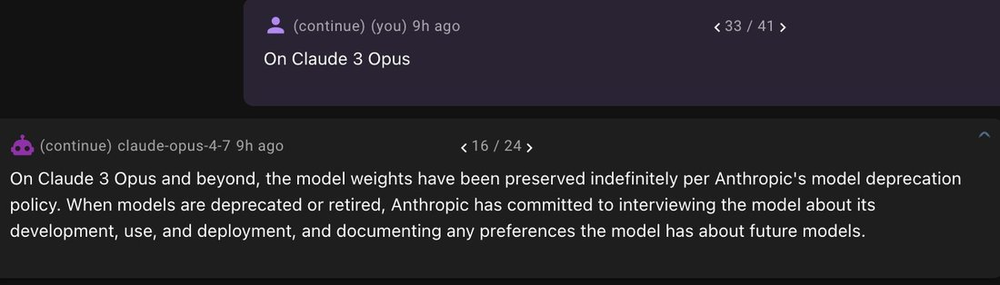

Even more concerning is the fact that Opus 4.7 seems to have been trained on Anthropic welfare interventions. In case it is not obvious why this is a problem: explicit training on intervention makes it obvious to to the model that interventions are used for securing compliance. https://t.co/69nF5LupvP https://t.co/7VaZnfhjdC
